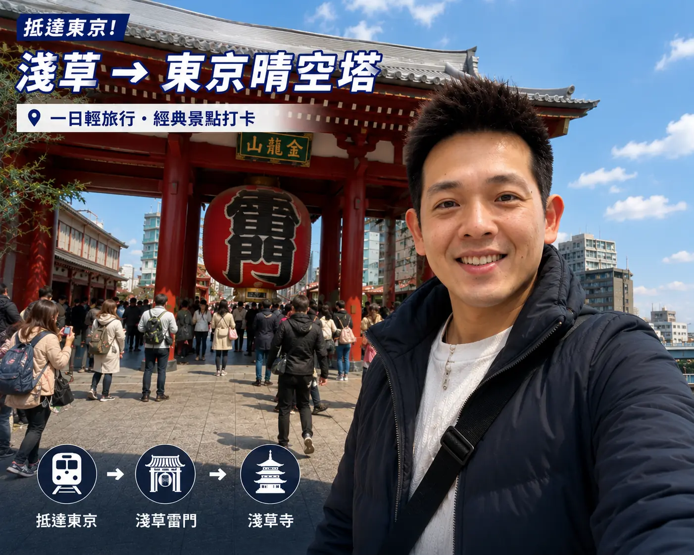
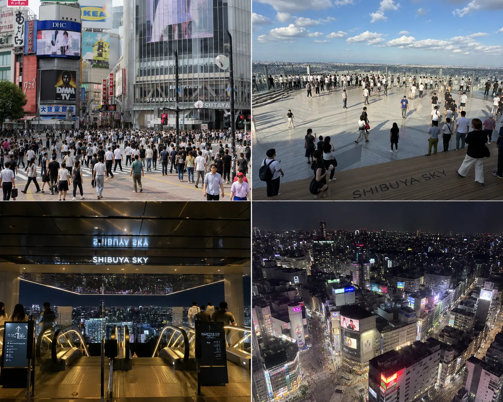
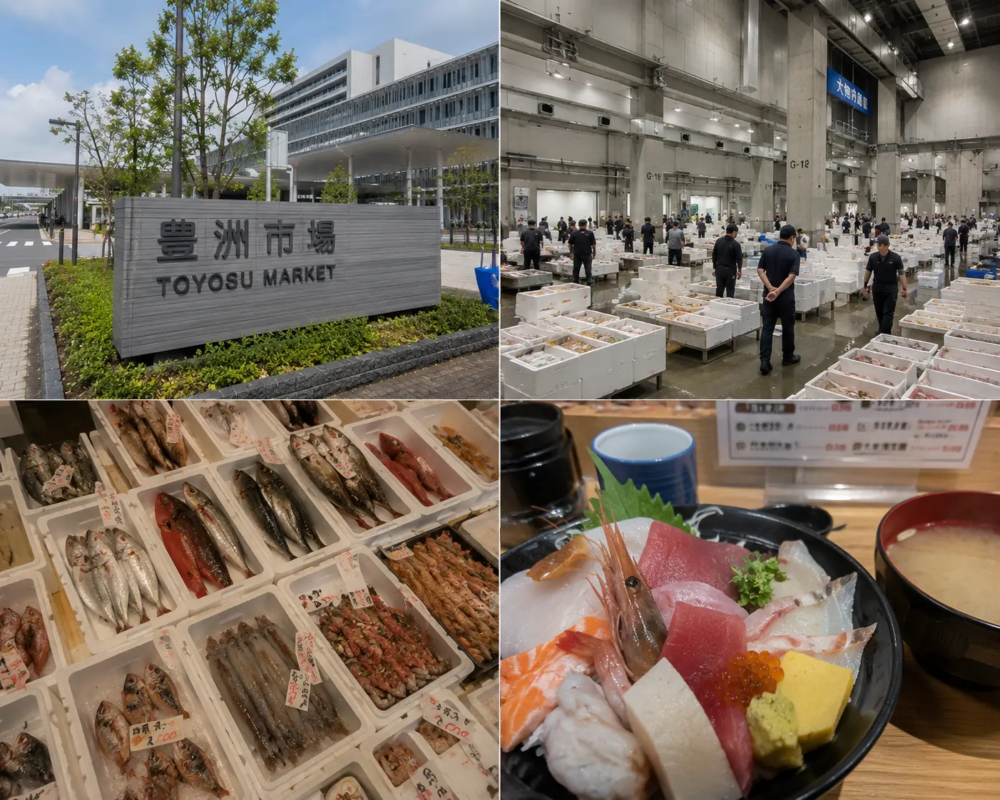
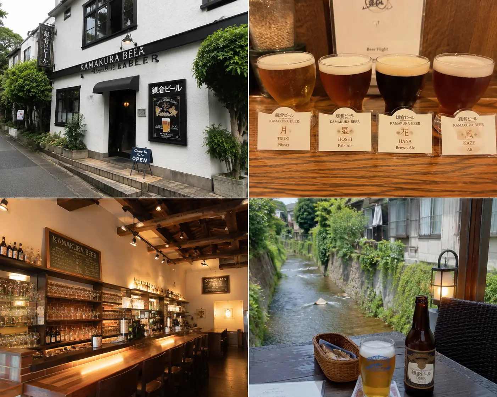

穿梭在千代田的神社與涉谷的霓虹交界，東京不只是一座城市，它是未來與過去重疊的無盡平行宇宙。
出發前準備：一鍵核對清單
在踏入東京之前，請確保您已搞定這 6 項基礎要件，開啟完美旅程：
台灣護照效期
效期須剩餘 6 個月以上，台灣籍旅客享有免簽觀光停留 90 天。
機票段落搭配
往返桃捷飛成田 (NRT) / 羽田 (HND)，廉航促銷價來回約 NT$5,000-8,000。
熱門商圈住宿
推薦落腳上野或新宿，可直達機場且夜晚生活與購物機能頂天。
極速 eSIM 卡
免拆卡、隨掃即用。首推 5 天 4GB 的 eSIM 資費方案，約台幣 200 元。
72小時地鐵券
買 Tokyo Subway 72H 券只需 ¥1,500（約台幣 330 元），無限搭乘地鐵。
日圓現金準備
在台灣提前換好約 ¥30,000 的現鈔。零用金不夠時用台灣提款卡在當地超商 ATM 提現。
隨身攜帶中華民國護照，在日本藥妝店、百貨公司等貼有免稅標誌的店鋪單日消費滿 ¥5,000 以上（未稅），即可直接在免稅櫃台或結帳時出示護照，省去 10% 的消費稅金。
省錢交通票券推薦：Tokyo Subway Ticket
Klook 獨家線上特惠
這次東京自由行我直接在 Klook 上買 Tokyo Subway Ticket（24/48/72小時），成田/羽田機場就能領票，地鐵隨便搭，不用每次排隊買票、更不用費心算車資，超方便！推薦買 72 小時券，CP 值最高。
5天4夜每日行程詳解
抵達東京 → 淺草寺 → 東京晴空塔

- ✓ Skyliner 機場快線：午後抵達成田機場，搭乘 Skyliner 直達上野，只需約 40 分鐘（車資 ¥2,520），省時省力首選。
- ✓ 淺草寺雷門散策：飯店寄放行李後，搭地鐵直奔淺草寺，在著名的雷門紅色大燈籠前合影，並逛逛熱鬧的仲見世通老街。
- ✓ 東京晴空塔 (Skytree)：傍晚步行至晴空塔。建議提前網購預約黃昏場次登頂，可完美俯瞰從夕陽晚霞到璀璨星光百萬夜景。
- ✓ 在地深夜食堂：晚餐前往淺草雷門周邊巷弄的傳統居酒屋或鰻魚飯老店，體味在地濃郁的市井生活氣氛（預算人均 ¥1,500-2,000）。
原宿散策 → 澀谷潮流十字路口 → Shibuya Sky 絕美夕陽
- ✓ 明治神宮晨間漫步：早晨漫步於高聳的檜木林蔭步道中，呼吸晨霧，在東京都心綠洲享受片刻靜謐與神社洗禮（免門票，約需1小時）。
- ✓ 竹下通/原宿潮流逛街：中午步行至竹下通，品嚐經典的現做香甜可麗餅，打卡極具個性設計感的日系潮流服飾與古著店。
- ✓ 澀谷十字路口打卡：搭地鐵或步行至澀谷，朝聖世界人流量最大的繁華路口，捕捉震撼的黑壓壓人群畫面。
- ✓ 登頂 Shibuya Sky：黃昏登頂當下最火紅的 360 度露天玻璃觀景台，將整個東京天際線和遠處富士山景色一併收入眼簾。

📝 小編實測心得：澀谷十字路口最震撼的拍攝點在星巴克二樓，但通常擠得水洩不通。我的私房位置是在澀谷 Mark City 通道天橋，隔著玻璃窗拍路口，不僅人少而且高度極佳！Shibuya Sky 天空展望台風力極大，安全起見手機以外的帽子、自拍棒都必須存入置物櫃，記得提前準備 ¥100 硬幣。
豊洲市場吃壽司 → 高級銀座 → 秋葉原次文化巡禮
- ✓ 豊洲市場海鮮饗宴：清晨前往豊洲市場（注意：原築地場內市場已完成搬遷，看鮪魚拍賣與吃名店都改到豊洲囉！）。
- ✓ 殿堂級壽司午餐：朝聖名店 Sushi Dai（壽司大）或市場內的其他大眾立吞壽司，海鮮新鮮度是迴轉壽司店的十倍以上，甜到流淚！
- ✓ 奢華銀座大道：中午搭地鐵到銀座，漫步精緻的 Ginza Six 百貨，朝聖各大時尚精品旗艦店，感受東京的奢雅底蘊。
- ✓ 秋葉原二次元天堂：下午直達秋葉原，探秘電子街、扭蛋店和無數模型、動漫週邊專賣店，特別推薦 Super Potato 懷舊遊戲店。

📝 小編實測心得：豊洲市場的生蠔與海膽絕對會讓你重新定義「新鮮」！如果不想早起搶號碼牌，市場周邊的「築地場外市場」仍保留著很多玉子燒、海鮮丼名店，也是邊走邊吃的好選擇。
湘南海岸近郊一日遊：鎌倉大佛 → 鎌倉高校前 → 江之島夕陽
- ✓ 近郊鐵道小旅行：清晨自新宿站搭乘 JR 湘南新宿線直達鎌倉（車資 ¥940，車程約 1 小時），沿途可欣賞綠意山谷。
- ✓ 朝聖灌籃高手平交道：購買江之電一日券 (¥800)，首站前往「鎌倉高校前」，尋找《灌籃高手》動畫片頭那道波光粼粼的湛藍海景與經典平交道。
- ✓ 鎌倉大佛與老街：在長谷站下車參觀長谷寺和莊嚴的鎌倉大佛，隨後前往「小町通」老街品嚐軟糯的大佛形燒和買一盒必備伴手禮鳩サブレー（鴿子餅乾）。
- ✓ 江之島無敵夕照：傍晚抵達江之島，攀登至嚴島神社與江之島瞭望燈塔 (Sea Candle)，看金燦燦的夕陽熔入湘南蔚藍的大海。

📝 小編實測心得：鎌倉限定手工精釀啤酒（Kamakura Beer）絕對不能錯過！吹著海風品嚐冰涼、帶有濃郁柑橘花果香的 Kamakura Beer IPA，簡直是人生一大享受。新宿回程的電車上喝上一瓶，一整天的步行疲勞瞬間消散。
新宿御苑漫步 → 新宿歌舞伎町一蘭拉麵 → 唐吉訶德瘋狂採購
- ✓ 新宿御苑清新晨光：早上漫步於新宿御苑（門票 ¥500），體驗皇家園林的開闊與精緻，如果是櫻花或楓紅季，這裡的景致幽靜度遠勝上野公園。
- ✓ 經典拉麵體驗：中午前往新宿歌舞伎町一蘭拉麵，感受全隔間吧台點餐的昭和文化體驗。
- ✓ 唐吉訶德免稅採購：下午在唐吉訶德（Don Quijote）新宿東口店瘋狂大血拼，藥妝、限定伴手禮、日系零食一網打盡，別忘了搭配免稅和折價券！
- ✓ 搭乘特快返程：16:00 前返回飯店提行李，搭乘 Skyliner 或 N'EX (成田特快) 前往機場，在免稅店做最後一輪採購後登機回台。

📝 小編實測心得：雖然一蘭被商業行銷捧得很高，但獨特的自助點餐和半密封「自閉格子間」確實是極具魅力的日本一人食文化缩影。下午 2 點後至傍晚 5 點、或者深夜 11 點後是用餐黃金離峰期，此時去幾乎不需排隊！
均在路上 ‧ 東京高性價比住宿推薦
編輯親自入住評估，小資首選上野旅宿
來東京，住宿地點首推上野（Ueno）。不仅房价比熱門的新宿、澀谷便宜 20-30%，而且擁有直達成田機場的京成電鐵 Skyliner，步行就能到淺草、上野恩賜公園。房間整潔明亮，CP 值高得驚人。目前 Trip.com 上正好有獨家限時優惠：
東京自由行常見問題 FAQ
不含大交通機票，5天4夜基礎消費約在 NT$25,000 - 35,000 之間。以下是小編上次自由行的實測真實花費明細明細（人均）：
- 住宿花費：NT$10,000（上野精品商旅雙人房 4 晚平分）
- 交通開銷：NT$2,500（Skyliner 往返機場快線 + 72小時地鐵通票 + 西瓜卡充值）
- 餐食花費：NT$9,000（平均每餐約 NT$450，部分早晨購買超商三明治非常省）
- 基礎購物：NT$8,000（藥妝保養品、日式小伴手禮、唐吉訶德零食）
只要一天搭地鐵超過 3 次，就閉著眼睛買 Tokyo Subway Ticket（72小時券 ¥1,500 最划算）。不過要特別注意：這張地鐵券不能搭乘 JR 線（包含著名的山手線、中央線等）！
建議將「地鐵券」與實體或手機「Suica/Pasmo (西瓜卡)」混合使用：去大景點搭地鐵，遇到只有 JR 到得了的地方再嗶西瓜卡，這樣搭乘最省最聰明。
- 搭手扶梯靠左立：東京手扶梯習慣靠左側站立，右側留給急行通道（注意大阪正好相反，靠右立）。
- 電車車廂內保持安靜：日本電車內禁止大聲喧嘩與用手機撥打通話，且需將手機轉為靜音模式（Manner Mode）。
- 自行隨身帶垃圾袋：日本街頭的公共垃圾桶非常罕見。大家習慣隨手攜帶小塑膠袋，將垃圾帶回飯店分類丟棄。
- 攜帶護照正本：出門逛街務必隨身攜帶護照正本，免稅店辦理免稅或退稅時需要查驗。
如果想去以下幾個知名景點，現場排隊基本上極難買到票，請務必提前 2 週到 1 個月上網預訂預約：
- teamLab Planets 展：豐洲的沈浸式光影網美大展，需提前預定特定場次。
- Shibuya Sky 展望台：黃昏看落日晚霞與璀璨夜景的特定時段秒殺。
- 吉卜力三鷹之森美術館：每個月 10 號開放預購下個月門票，完全秒殺。
- 東京晴空塔：網路早鳥票比現場排隊買便宜約 20% 且省去排隊時間。
- 豊洲市場鮪魚拍賣：需提前一個月上官網參與抽籤才能進入專屬通道觀賞。